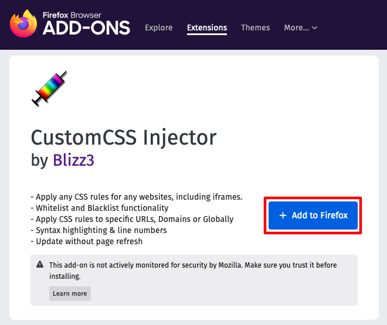
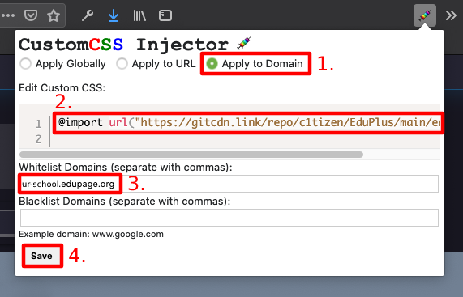
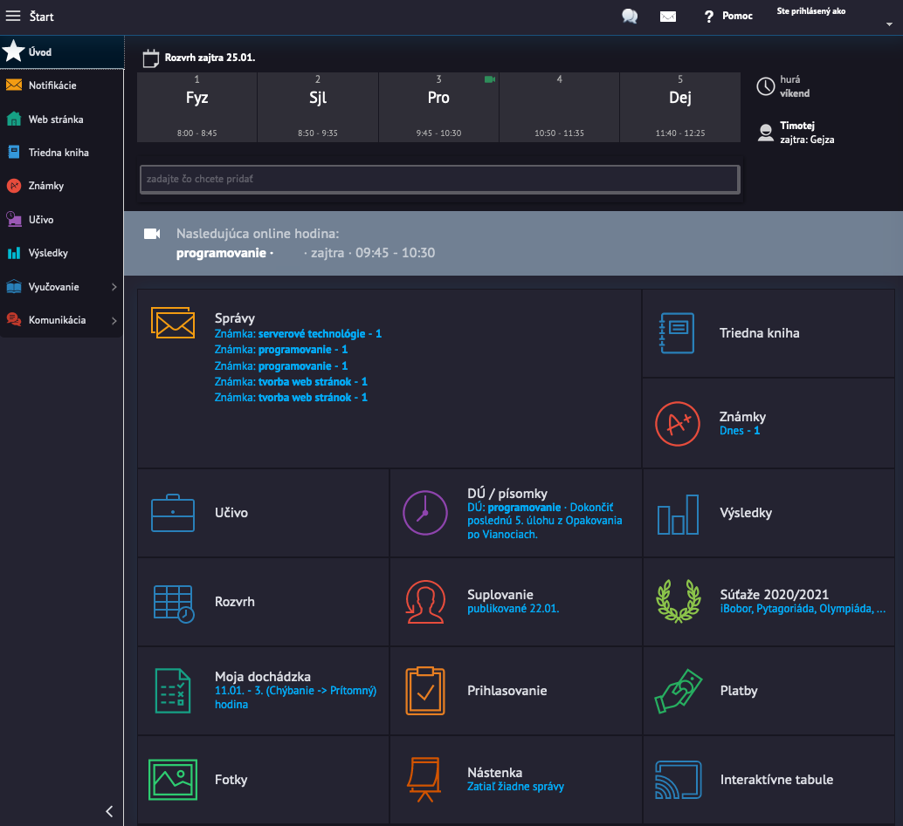
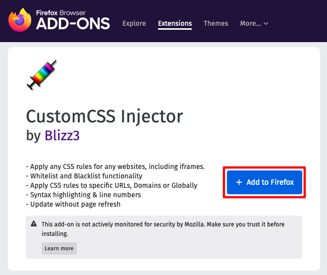
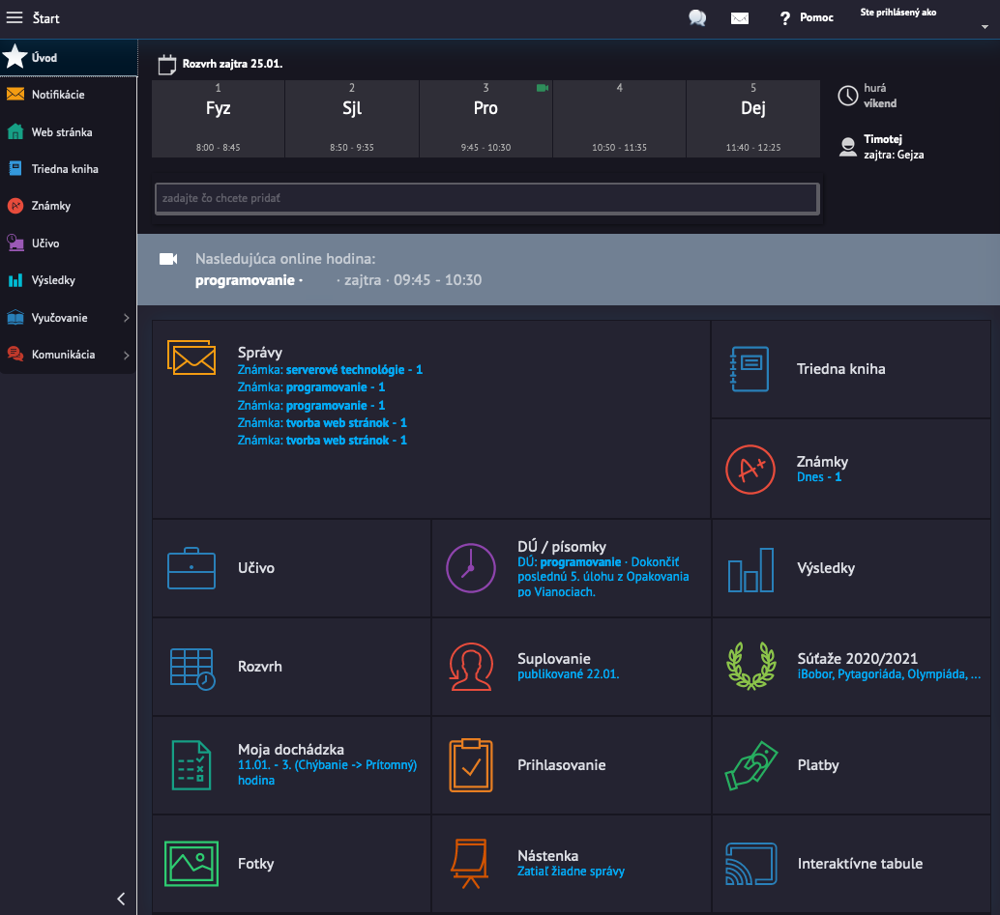

1. Install Custom CSS Injector addon
2. Apply these settings and import this one line of code:
@import url("https://gitcdn.link/repo/c1tizen/EduPlus/main/eduplus.css")
3. Thats it! Now you can enjoy a nicer, smoother EduPage.
1. Install Custom CSS Injector addon
2. Apply these settings and import this one line of code:
@import url("https://gitcdn.link/repo/c1tizen/EduPlus/main/eduplus.css")3. Thats it! Now you can enjoy a nicer, smoother EduPage.
